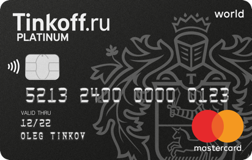
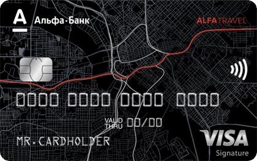
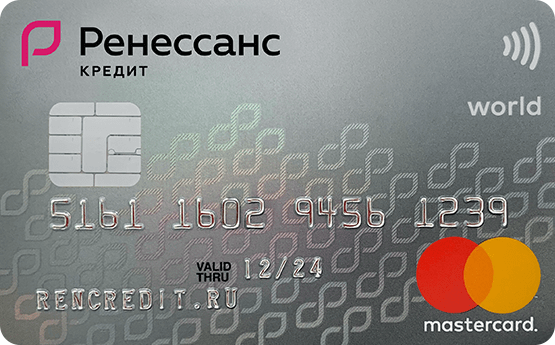

Существует несколько видов банковских карт, они различаются по типу платежной системы, по типу операций, которые можно совершать и по назначению. Рассмотрим каждый вид банковских карт подробно.
По типу платежной системы
Международные
Международные банковские карты – это карты международных банковских систем. Наиболее популярными являются системы Visa и MasterCard. Карты этих систем бывают нескольких видов и различающихся по своему функционалу. Наиболее популярные из них позволяют производить операции практически в любых банкоматах и терминалах по всему миру, а также оплачивать покупки через интернет. Подавляющее большинство карт, выпускаемых банками, имеют в своей основе данные платёжные системы.


Банковские карты Tinkoff Mastercard и АльфаБанк Visa
Локальные
Кроме логотипа платежной системы, на карте могут быть указаны логотип эмитента и/или компании-партнера.
По типу операций
Дебетовые
Самое главное отличие дебетовой карты от кредитной: дебетовая карта дает доступ к деньгам, которые есть на вашем счете. Любые операции (безналичная оплата, снятие наличных) возможны только в пределах остатка на вашем счете.
Существуют и так называемые виртуальные карты. Они действуют на специфической территории — исключительно для оплаты покупок в интернете. С их помощью нельзя рассчитаться в супермаркете или снять наличные в банкомате, потому что самой карты физически не существует — есть только необходимые для платежа данные.
Рассчитываясь в интернете виртуальной картой, вы не раскрываете реквизиты основной карты, что делает онлайн-платежи безопаснее. Виртуальные карты могут быть одноразовыми и многоразовыми, с лимитом или без.
Зарплатные карты, на которые работодатель перечисляет сотрудникам деньги, обычно дебетовые. Но бывает, что банк предлагает оформить так называемый овердрафт.
Дебетовые карты с овердрафтом
Слово overdraft с английского переводится как «перерасход, перебор». Овердрафт — по сути тот же кредит, разница в условиях его получения. Обычно банки предоставляют овердрафт своим надежным клиентам, на счет которых регулярно поступают деньги (например, зарплата). Вам не придется оформлять отдельную кредитную карту — к вашей дебетовой карте добавится возможность получения денег банка в кредит (размер овердрафта определяет банк), которые вы сможете потратить, а потом вернуть. Однако проценты за использование овердрафта обычно выше, чем за обычный кредит. Уходить в «перерасход» регулярно, не укладываясь в грейс-период (льготный период уплаты процентов по кредиту, когда проценты не начисляются или начисляются в размере, который ниже базовой ставки), крайне невыгодно.
Кредитные
Кредитная карта, в отличие от дебетовой, дает доступ не к вашим деньгам, а к деньгам банка. Вы занимаете у банка деньги, и за это придется платить. Нужно тщательно изучить условия предоставления кредита, чтобы использовать карту с максимальной выгодой для себя. Изучите, как начисляются проценты, есть ли грейс-период и сколько он продолжается, нужно ли платить за годовое обслуживание кредитной карты, какой размер процента за снятие наличных. Кредитными картами выгоднее расплачиваться, а не снимать наличные в банкомате — по условиям большинства банков за снятие наличных придется заплатить.

Кредитная карта банка Ренессанс
Предоплаченная карта
Предоплаченная карта — по сути «электронный кошелек», в который можно положить определенную сумму денег. Банк выдает предоплаченную карту клиенту, но банковский счет при этом не открывает. Клиент пополняет карту и может ей пользоваться. Предоплаченная карта может быть именной или неименной — от этого зависит остаток на карте. Как правило, на неименных картах банки устанавливают небольшой лимит (не более 15 000 рублей), зато их можно получить, не предъявляя паспорт, и подарить кому-нибудь. На именных картах лимит обычно больше.
Такие карты удобны тем, что выпускаются мгновенно. Но у них есть и минусы: деньги, которые вы внесете на карту, не подлежат обязательному страхованию по закону о страховании вкладов. Получить кредит на такую карту тоже не получится — на предоплаченной карте могут храниться только деньги клиента.
Предоплаченные карты выпускают исключительно банки — не стоит путать предоплаченные карты с подарочными или бонусными. Многие компании выпускают подарочные карты с определенной суммой денег. Например, вы можете купить в магазине с товарами для детей карту с номиналом 5000 рублей и подарить ее молодым родителям. Тем останется прийти в магазин и выбрать товары на эту сумму. А если подарить им предоплаченную карту банка, они смогут потратить деньги не только в детском магазине, а где угодно. В таком случае предоплаченная карта будет более презентабельной заменой привычного конверта с деньгами.
По назначению
Личные
Личная банковская карта оформляется клиентом самостоятельно и используется им в личных целях. В связи с тем, что клиент заводит карту по собственной инициативе, он, как правило, делает это осознанно и стремится к тому, чтобы карта наиболее полно удовлетворяла его потребности и давала некоторые преимущества.
Зарплатные
Зарплатные карты выдаются сотрудника компаний в рамках зарплатных проектов (договор предприятия с банком о перечислении заработной платы на карты). Условия использования зарплатных карт обычно являются более выгодными, чем при использовании личных. Кроме того, владельцам зараплатных карт банки обычно значительно упрощают процесс оформления кредита, и условия кредитования при этом могут быть льготными.
В зависимости от конкретной организации может потребоваться вернуть карту после окончания работы в компании или продолжать пользоваться ею до истечения срока действия.
Корпоративные
Корпоративные карты выпускаются с целью совершения оперативных покупок и оплаты услуг сотрудниками компаний в её интересах, например оплата ресторанов, АЗС, автомоек и т.д. Денежные средства, находящиеся на счету карты, принадлежат компании и учитываются в расчете собственных средств. В связи с этим, все операции, проводимые по карте, должны быть подтверждены чеками и другими документами, подтверждающими целевое использование средств.
Предвыпущенные
Предвыпущенная банковская карта – это карта, которая выпускается ещё до написания клиентом заявления на получение карты. Такая карта изначально не содержит информацию о её владельце, на ней не указаны ФИО. Карта прикрепляется к счёту, который открывается на конкретного клиента. Такая карта дает возможность совершать все те же операции, что и обычная дебетовая, в том числе пользоваться онлайн-банком, получать проценты на остаток средств. Однако в целях безопасности не рекомендуется использовать такие карты как основные и хранить на них большие суммы, так как проведение оплаты по ним не требует предъявления документов. Кроме того, карты могут не приниматься для бронирования отелей, аренды автомобилей и оплаты в некоторых интернет-магазинах.
Предвыпущенные карты очень удобны, когда необходимо срочно оформить карту, ведь в этом случае процедура займёт несколько минут. Также их часто используют банки для выплаты процентов или для пополнения кредитного счёта.